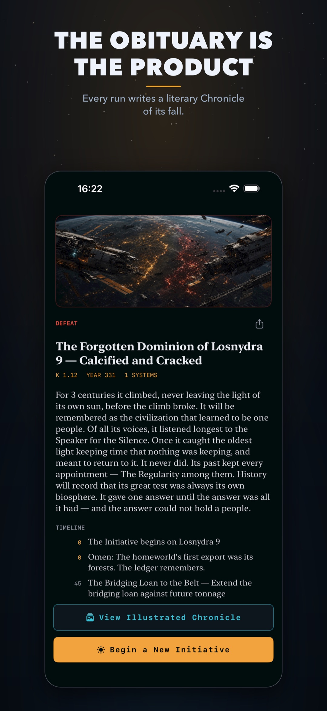
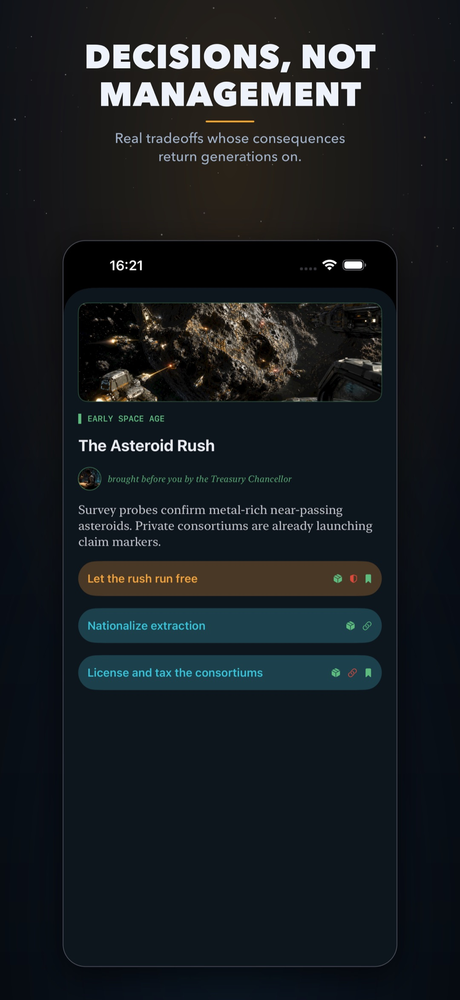
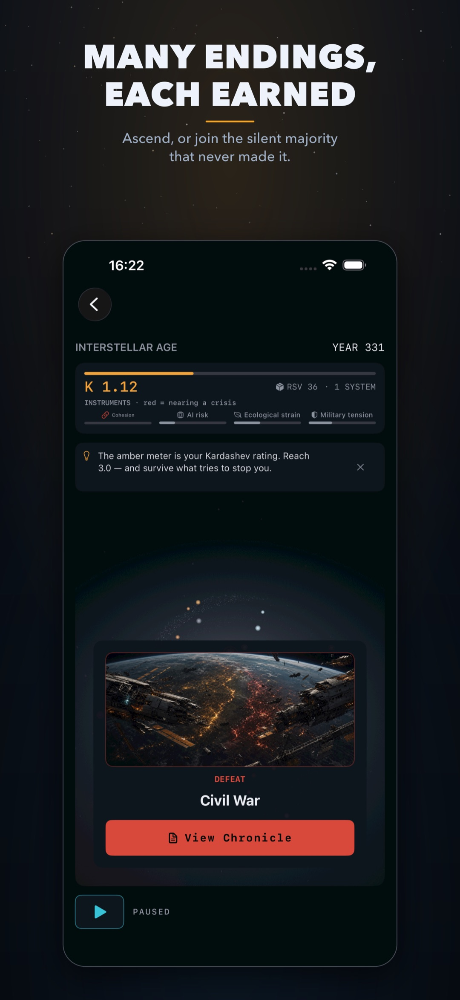
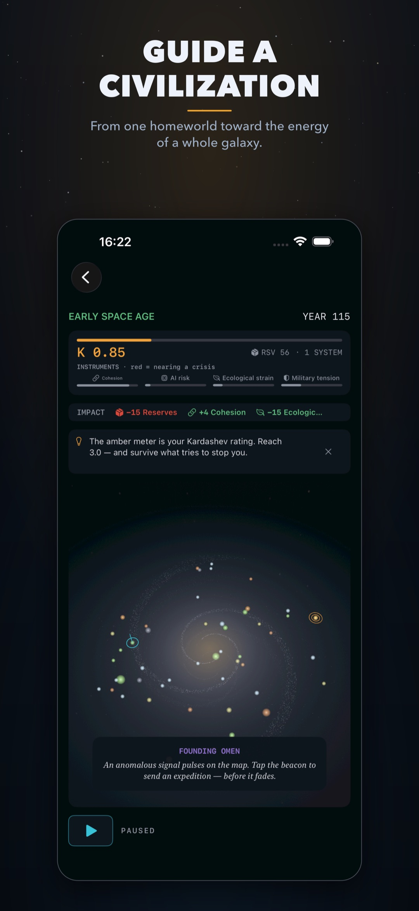
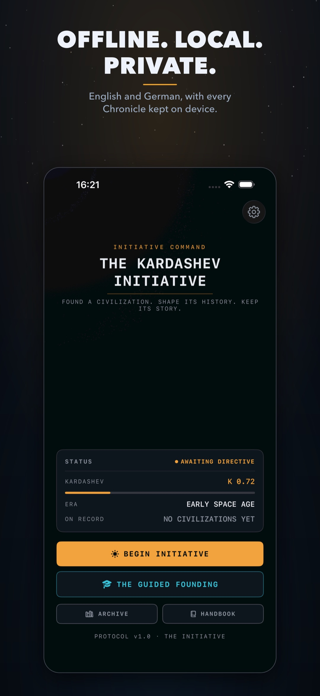
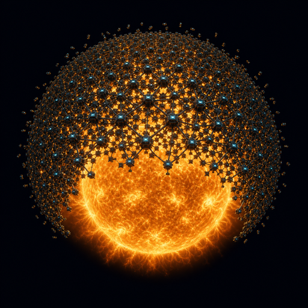

A literary hard-science-fiction roguelite that writes the obituary of every civilization you lose. Free, offline, for iPhone, iPad & Mac.
| Title | The Kardashev Initiative |
| Developer | Konrad Kern — solo developer |
| Platforms | iPhone, iPad, and Apple-silicon Mac (iOS / iPadOS / macOS) |
| Price | Free — no ads, no in-app purchases, no subscriptions |
| Availability | Out now on the App Store |
| Languages | English & German (full interface and every event card) |
| Privacy | Fully offline. No accounts, no analytics, no data collection of any kind. |
| Built with | SwiftUI — Apple-native, offline-first |
| Press contact | kern.konrad@gmail.com |
| Links | App Store · Website |
One line: A hard-SF roguelite where the point isn't the win screen — it's the obituary.
You guide a civilization from one homeworld toward the stars across 10–25 minutes of card-driven, civilization-defining decisions — fund the Dyson swarm or seize its budget, trust the machine mind or audit it, answer the signal from the dark or stay silent. Runs always end, in a victory or (more often) a defeat. There is no endless sandbox, no idle grind, no energy timers.
When a run ends, the game doesn't show a score. It writes a Chronicle: a short, literary obituary of the civilization you led and lost — how it rose, where it broke, what it will be remembered for. The simulation underneath is deliberately thin; it exists to generate a memoir you would actually want to read back. The obituary is the product.
Every run ends by writing a short literary Chronicle of the civilization you lost — not a stats screen, an epitaph assembled from what actually happened.
Decisions with real tradeoffs whose consequences return generations later. No fake choices.
Every run is a different map, a different story, and a different hidden Great Filter tuned to your civilization's weakness.
Dyson swarms, wormhole gates, Matrioshka brains, von Neumann probes, the dark-forest answer to the Fermi paradox — driving the game, not decorating it.
Fully offline. No ads, no accounts, no in-app purchases, no analytics, no data collection. Every Chronicle stays on the device.
The entire interface and every event card, fully localized.





“Most strategy games ask: did you win? This one asks: what will they write about you when you're gone?”
“The obituary is the product. The simulation is just the ink.”
“A full run is one short science-fiction novel, compressed into 10–25 minutes — and it always ends.”
“The Fermi paradox isn't trivia here. It's the antagonist.”

Download app icon (PNG) · Download trailer (MP4) · Screenshots above are free to use with credit to The Kardashev Initiative.
Konrad Kern — kern.konrad@gmail.com. Review codes aren't needed (the game is free), but I'm glad to answer anything, walk you through a run, or provide additional assets.
{kind=link}